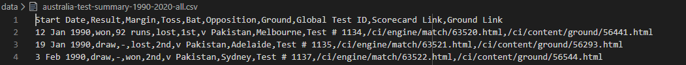
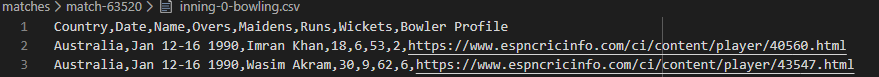

1.0 Introduction
1.1 Aims
1.2 Data and Software
1.2.1 Data Sources
1.2.2 Software
1.3 Definition of Terms
2.0 Visualisation
2.1 Analysing Win Percentages
2.1.1 Win/Draw/Loss Percentages over Time
2.1.2 Win/Draw/Loss Percentage by Location and Country
2.1.3 Win/Draw/Loss by Toss Result
2.2 Batting Analysis
2.3 Bowling Analysis
3.0 Limitations and Evaluations
4.0 Conclusion
References
Appendix
The Australian Cricket Team of the early to mid 2000s is regarded by many
to be the most dominant team in the history of the game. As a result,
it's fall from grace during the latter part of the 2000s and into the 2010s
is of great interest to fans around the world.
Many have speculated about the reasons for this rapid downfall, arguing
that everything from a lack of quality players in domestic tournaments
to changing overseas ground conditions. But most fans and analysts
agree that the 2000s were a period of dominance.
Cricket as a whole is a game entirely composed of statistics. Each
player that has ever played can be decomposed into various metric such
as their Average or Strike Rate and from this insight can be gained
into their style of play and quality. This is useful when dicussing
the performance of a team as a whole as the team's performance
is equal to the sum of its parts. Hence,
The main aim of this report is to identify if there has been a decrease in performance
of the Australian Cricket Team and outline some of the main causes of this
decrease in performance.
For the purposes of this project, rather than looking at performances in
all 3 formats of Cricket (T20Is, ODIs and Tests), only Test matches will
be looked at. These are the longest format of the game and while performances
in T20Is and ODIs are often sporadic and less dependent on team quality,
performances in Test matches are a direct result of the quality of a team.
As well as this, the years that will be analysed in this report are
constrained to 1990 - 2019. This is because, starting at 1990 should capture
the period before the short period of dominance around the early and mid 2000s
and should allow for a baseline with which the post-dominance years can be
compared to.
Three main areas will be analysed within this report. These are:
While there are many more factors to looking at the dominance of a cricket team, such as pitch conditions and captaincy, these are not easily quantifiable and thus a decision was made to focus on just the above areas.
The main data source for this report will be the "Statsguru" database created by ESPNCricinfo.
[1]
This database is regarded as the most
comprehensive cricket database, containing all International
and almost all Domestic games since the late 19th Century.
The main data collected from ESPNCricinfo was:
The first piece of data is obtained through a query in the Statsguru engine. The query was manually submitted to the engine to retrieve all test matches that Australia played between the years 1990 and 2019. This query was then scraped using the Python parsing library BeautifulSoup4 and the relavent data saved as a CSV file. In order to individually analyse data for home matches, away matches and a combination of both of these, three separate match summaries for each of these were saved. This data has 10 columnsas shown below.

The second piece of data is obtained by taking the match ID and scorecard
link from the match summaries and parsing the HTML of the scorecard page
before saving it as a CSV. A scorecard
gives a breakdown of the entire game, outlining each player's contribution
to the team's run total and their contribution to the bowling. Using this,
a summary of each player can be constructed over time, allowing for
finer granularity when looking at the career of a player over time
or the performances of the team over time.
Data from this source was also scraped using a custom parser using
a series of objects that represent matches, innings, bowlers and batsmen
with the BeautifulSoup4 package at its core. This script used the collected data of
the first form to access scorecards of matches played by Australia between
1990 and 2019, downloading and parsing each before saving
each bowling and batting inning as a CSV file. Each bowling CSV has 8 columns of data
and each batting inning CSV has 6 columns as shown below.

As well as ESPNCricinfo, ground locations data was manually sourced
by using Google to find the latitude and longitude for each ground.
This was done as there does not seem to be any singular database
that contains the coordinate positions for cricket grounds around
the world. Writing a script to do this would be quite pointless as
it would probably take longer especially since there are only 64
grounds.
All data collected has been included in "code-and-data.zip" and is spread
between the folders "data" and "matches".
The main software that will be used for creating visualisations is the Plotly [2] package for Python. This specific visualisation software has been chosen as it is highly customisable and fairly simple to use, especially with CSV data files. Preprocessing will be done using the Pandas [3] package for Python, which allows for easy transformation of data through the use of Dataframes. All code used to generate these plots has been included in the root folder of "code-and-data.zip". All plots were generated using Python Jupyter Notebooks. These notebooks also contain many more experimental plots there than were included in the report.
Cricket can be a highly jargon-filled game and as such a glossary
of key terms has been included for this report.
The analysis of the data can be split up into 3 main sections. The first section analyses overall trends in win percentages over time and comparing to playing location and conditions. Section two analyses the quality of batting over the 30 year window and section three analyses the quality of bowling over this same period.
Figure 1
To begin with a stacked-area chart representing the 5-year rolling
win percentage between 1995 and 2019 was produced. This visualisation
uses data from 1990 to 2019, however the first 5 years were cut since
they did not contain a full 5 years of data.
The change of the win percentage over this period is quite interesting. As a whole it can be seen that, at first the win percentage underwent a rapid increase between 1995 and 2003 before reaching a peak. During the 5 years following 2003 (2003 - 2008), ther was a mild decline, but overall the win percentage stayed relatively constant. However, after 2007 there is a rapid increase in the amount of games lost, while the number of games drawn only sees a slight increase.
Taking a look at the visualisation for Home and Away games separately
two different trends are seen. For home games, the win/draw/loss percentage
is relatively constant, with some decrease in draws and losses seen
between 2003 and 2010. The away win/draw/loss percentage is far more
interesting. While the initial trend is similar to home games, after
2005 the percentage of draws steadily increases until roughly 2010,
when the percentage of losses begins to increase while draws decrease.
All of this results in a massive decrease of win percentage. By the end of 2019,
the loss percentage makes up the majority of games (over 50%).
All of this suggests that the biggest factor behind the decrease in
Australia's overall win percentage was overseas performance with
home performances playing a very small role overall. As such,
the data should definitely looked at individually based on
whether a game was played at home or away.
Figure 2
This can also be viewed at ./figures/win-rate-animation.html if there are glitches
This visualisation provides an interesting reinforcement to the trend noted
in the previous section. While win and draw percentages consistently
stay very high for home matches for the entire period, it is interesting
to note that this is not the case for away matches.
Another interesting point to note is that Australia did not play
in South Africa until 1994 and in Bangladesh until 2006. As well as this,
Australia increased the frequency of away tours to India over the 2000s. The reprecussions
of this is not exactly clear, but it appears that there was also a reduction
in the number of matches played in New Zealand and the West Indies during
this period. This coupled with the increase in win and draw percentages in
New Zealand and the West Indies suggests that these were weaker away oppositions
and as such could have helped with the very high win percentages during
the early 2000s. However when Australia stopped playing these nations,
they played a stronger South African team and Indian team and as a result
struggled to perform agains them.
Another one of the main aspects of the results of a test match is anecdotally considered to be the result of the toss (coin toss). The winner of the toss is given the option to either bat first or bowl first. As such, it is important to consider that streaks of "bad luck" where a captain loses many tosses in a row could result in a decrease in performance.
Figure 3
This visualisation uses the toss result data to analyse home, away and all toss results individually. A heatmap helps with the ability to spot hotspots that might not be obvious if a bar chart or scatter plot were used.
In this case hotspots can be seen where the toss is won and match result is that of a win and where the toss is lost and the match result is that of a loss. This is especially the case for away games against all oppositions. This suggests that the anecdotal evidence put forward by many cricket fans is indeed accurate and that winning the toss does have a positive influence on the likelihood of winning the game, especially when playing in foreign conditions.
Perhaps, then, Australia's decrease in performance in foreign conditions can be attributed to an increase in the number of tosses lost. Plotting the percentage of tosses won/lost over time was used to identify if there was a correlation.
Figure 4
It is interesting that over the period in question, the number of tosses won seems to be very high for Away games and very low for Home games. However, while the overall trend for all matches and home matches is well defined, the trend for away matches is far less defined over time. As such, nothing can be conclusively determined from looking at the toss data apart from there being a link between tosses won and matches won and tosses lost and matches lost when played overseas.
Another massive aspect of cricket is the performance of batsmen. While historically, batsmen have their contribution to the team measured over the course of series or their entire lifetime, for the purposes of this report it is more relavent to investigate a batsman's contribution over a single year.
There are three main aspects of a batsman's statistics:
For the purposes of this analysis "Runs per Innings" was used
over a batsman's Average as a player who is commonly "Not Out"
at the end of the Innings could have a very high Average, while
their actual contribution to the team's total runs is not that
high.
As well as this, while convention argues that strike rate is
not important when talking about test matches since players have
longer to play, it was determined that it would be intersting
to investigate that to see if it
reveals the intent of the batsman's batting.
In order to show these metrics over time the below visualisation
was created.
Figure 5
This visualisation uses the two axes to represent "Runs per Innings"
against "Strike Rate", that is how many runs a batsman scores
in a single inning compared to how quickly they score it. The size
of each bubble represents the total runs scored by a particular
batsman over a single year. The colour of the bubble represents the
year it was scored in with a scale used to show the sequence of years.
In addition to this, the geometric median (represented by the black crosshair)
was calculated for each year using the Runs per Innings and
Strike Rate for each player and plotted on the scatter plot for each year.
As a whole, one of the most evident trends in the entire visualisation
is the increase of strike rate over time. While purple bubbles and
thus earlier bubbles are predominantly found on the left hand side
of the visualisation, pink bubbles are found further to the right.
The most recent bubbles (orange and yellow) are found scattered
throughout suggesting more inconsistency in recent years and
perhaps indicating that modern Australian players are far more
inconsistent.
Another trend that is present from visual inspection, is the occurrence
of high run, high runs per innings and high strike rate years for players
around the early 2000s. This is seen in the dominance of light pink
and light purple bubbles around the top right quadrant.
On a more microscopic level, it becomes evident that current players
are far more incosistent in their run scoring. While in the early 2000s
there are consistently large amounts of large bubbles, by the 2010s
the players scoring large amounts of runs and the number of these players
is very inconsistent.
To further analyse Australia's batting, the geometric median was
graphed against time. This gave the following animated graphs
which can be played by pressing the "play" button:
Figure 6
Figure 7
While seeming messy at first, the main trend observed in both of
these is the initially low strike rate
and runs per innings of the geometric median both at home and away. This
results in a small grouping at the bottom left. Immediately after this
initial period, both the runs per innings and the strike rate increase
rapidly, creating another grouping for geometric medians around the years
2000-2009. Finally, the geometric median becomes far more sporadic from year
to year, generally employing a decreasing trend until it recedes back to
pre-2000 levels.
All of this suggests that during the period of Australia's dominance
batsmen were scoring more runs and at a faster rate than the period
prior to 2000 and the period post 2010. This suggests that Australia
would post higher totals and as a result be able to win more games.
However, this visualisation does not take into account the number
of players actually scoring 200 runs in a year. From the visual insepction
of the Figure 5, it appears that there is a decrease in
the number of players scoring above 200 runs and of the players that
score above 200 runs it appears that they score fewer runs in total.
Since this trend is not exactly easily identifiable from the bubble chart
it was decided that further analysis could be conducted in this area.
As well as what is stated above, the final metrics of a batting team's
quality is that of the number of Balls Faced. That is, the total number
of balls a team is able to
play until they are "All Out". Since an Innings is only over when the
batting team is "All Out", the ability to face more balls could be the
difference between acquiring a draw or losing the game.
As well as this, a high amount of balls faced but a low amount of runs
scored is largely indicative of highly defensive batting that teams
often employ when they believe they have no change of winning. This is
especially prevalent in overseas conditions where batsmen may not be comfortable
with the conditions. As such, the below visualisation was created to investigate
whether this was the case with the Australian team.
Figure 8
Both of these visualisations show the relationship between the
number of balls faced and the number of runs scored. In general,
for both Home and Away games the more balls that a player faces, the
more runs they score in a year. Reading further into each of these
visualisations, it becomes clear that fewer players are facing
more than 300 balls and scoring more than 300 runs in a year both
in home matches and away matches over the 2010s than there were in
the early-mid 2000s. In fact, it becomes clear that the percentage
of players that score over 300 runs over a year in the 2010s
is around the same as it was in the 90s.
Another interesting trend is that of the number of balls faced. It can be seen
that over time there is a decrease in the percentage of players facing
any particular amount of balls. For example, the percentage of players
facing >= 200 Balls is higher in 1990 than it is in 2000 which is higher
than it is in 2010 or 2019. This suggests that current batsmen may be trying
to emulate the batting style of the early 2000s and failing at it.
Both of these in combination can result in fewer games being drawn and more being outright lost.
Considering the above visualisations (Figure 5 through 8) it becomes clear that
the quality of batting has decreased between 2007 and 2019 and so has
the general style of batting. This was at first preceeded by an increase
in the quality of batting.
In order to analyse the bowling performances of the Australian team first, various derived columns were created. This includes columns of data such as runs, wickets and balls per innings and in total over a player's career for both home and away conditions. By doing so, more intricate details about the player can be compared. However, this also resulted in 16 columns of data, which would be extremely unwieldy for an unsupervised learning algorithm such as k-means or a gaussian mixture model. As such, a Principle Component Analysis was applied to reduce the number of columns within the data while covering close to all of the variance in the data. The results of the PCA can be seen below.
Figure 9
5 components were chosen as this allows for a coverage in variance of around 95%. It is interesting to note that "GD McGrath" and "SK Warne" are located on the extremities of most of the component against component graphs. This suggests that they are outliers in terms of bowling performance, however it is not yet clear (without using prior contextual knowledge) if this was in a positive or negative sense. Apart from this, the above representation is not very useful as it doesn't represent any sort of tangible metrics, hence the Gaussian Mixture Models clustering algorithm was applied using the Scikit Learn Python module.
This clustering gives 10 classes which essentially classify every Australian player who has bowled a signle delivery into one of 10 categories of bowler which makes the comparison of trends simpler. The composition in terms of each of the 5 PCs is below.
Figure 10
Plotting the percentage of balls bowled by bowlers of each class over time results in the following.
Figure 11
This once again suggests an interesting trend: the percentage of balls bowled
by Class 5 bowlers has decreased over time. There are only 2 bowlers in this
class, specifically "GD McGrath" and "SK Warne".
As well as this, it can also be seen that there was a dip in Class 8
and Class 4 bowlers between the years of 1998 and 2008, which are surrounded by large
peaks on either side. The final relavent trend seems to be that of Class 0, which has steadily
increased its share of balls bowled since the late 1990s.
Both of these trends should be interesting to explore in more depth
by analysing the records of specific Class 0, 4, 5 and 8 players to see
how their bowling or lack thereof contributed to the demise of Australian
cricket. However, due to time constraints this was not possible for this
report and instead each bowler's "Average" was compared to the "Balls per Innings"
they bowl and their class. This gives a fairly good representation of the qualities
of each class and allows for analysis in that regard.
Figure 12
Figure 13
For the sake of brevity, classes of bowler with no interesting quality
are not dicussed below.
Using Figure 12 and 13, it can be seen that Class 5 consists
of "star" bowlers or those that have the best home and away record that
are also very heavily relied upon, bowling close to 50% of all
balls bowled during their peak. Hence, the retirement of both Shane Warne
and Glenn McGrath in 2007 was a massive event and is likely a very large
aspect of the decline of the Australian Cricket Team after this point in
time.
Using the above visualisation it can be seen that Class 4 bowlers represent
less-used bowlers that perform quite well in away matches while being mediocre
in home matches such as "SPD Smith" and "AR Border".
These bowlers would thus only be used in cases where front-line main
bowlers are unable to take wickets. Thus, with the existence of Class 5
bowlers this would be unnecessary to do.
Class 8 can be seen to be similar to Class 4, however these bowlers
are more consisten than Class 4 bowlers in that they perform similarly
in both home and away conditions. These bowlers would again only
be used in cases where the front-line main bowlers are unable to take wickets
and as such with existence of Class 5 bowlers they are not needed.
Most bowlers in Class 4 and 8 are in fact not even bowlers, instead
primarily playing as batsmen in the team, meaning that their use is
essentially a last ditch effort by the captain to take wickets in order
to stop the opposition from scoring.
Class 0s increase in its share of balls bowled also seems to make sense
when contextualised by the above visualisation. It can be seen That
all of the bowlers in Class 0 have very low Averages and very high
numbers of Balls per Inning suggesting that these are the front-line
main bowlers as mentioned previously. Hence, it makes sense that
Australia's rise in the 90s coincides with the increase in reliance
on Class 0 bowlers as well as the consistent dependence on Class 5 bowlers.
It can thus be argued that Australian bowling was largely responsible
for the intial rise of the Australian Test Team during the late 90s.
The main limitation of this report is the broadness of the initial
aims. While it was possible to create some interesting visualisations
using the in depth data collected,
not having a very specific focus outside of "Batting Quality" or
"Bowling Quality" resulted in some visualisations not being
tied in as strongly as was hoped.
More specifically, the conclusions made from the visualisations are
limited in the conclusions that can be drawn from them. Most of the
visualisations presented can only show a correlation between them
and the decrease in performance of the Australian Test Cricket Team.
In general, however, the visualisations produced are interesting and were
challenging to design. Catering to colour blindness through specific colour
schemes (for example the purple-green scale of Figure 2)
and ensuring clarity while not producing figures that were extremely
large was difficult. For example, Figure 5 is very large and can be
unclear for someone unfamiliar with cricket jargon and as such it could have
been split up. However, there was no good way to split it up.
As well as this, the interactivity of some visualisations detracts
from the visualisations when viewed in a static nature. Most of the
interactive visualisations require interaction in order to understand
what is being shown by hovering over bubbles to show various stats.
As well as this, in some cases interactive selectivity using the legend
doesn't work due to the way subplots work within plotly and the workarounds
that were needed to create the visualisation. This is especially the case
for Figure 1 and 5.
Finally, the animated visualisations were both interesting to create
and challenging as they required using confusing plotly methods that
were poorly documented. The end product of these animated visualisations
is not as impressive as was hoped, however they still show some
intersting trends within the data. Such as the groupings over time
of the geometric median that was found through Figure 6 and 7.
The main conclusion that can be drawn from this report is that there
were many factors that led to the fall of the Australian Test Cricket Team.
These range from the decrease in performance of batsmen as a whole over
various metrics such as Runs per Year, Balls per Year, Runs per Innings,
Strike Rate and Balls per Innings. This suggests that the overall quality
of Australian batting has declined.
As well as this, the quality of bowling has also decreased with
part-time and non-frontline bowlers being relied on to bowl more balls
and take more wickets. This suggests that domestic cricket is producing
far fewer high quality bowlers.
It can be seen that the initial rise
in dominance is rapid and clearly as a result of high quality bowlers
and to a slightly lesser extent high quality batsmen. Furthermore,
the retirement of players such as Shane Warne and Glenn McGrath in 2007
likely spurred the fall from dominance following that year. However,
this fall was far more gradual than the rise the reason for this is
the incosistency of players who may be good in one year and terrible in
the following.
In the future, further analysis could be conducted into:
[1] Cricinfo. 2020. Cricket Records - Find ICC Cricket Stats Online | Espncricinfo.Com. [online] Available at:
[2] Plotly.com. 2020. Plotly: The Front-End For ML And Data Science Models. [online] Available at:
[3] Pandas.pydata.org. 2020. Pandas - Python Data Analysis Library. [online] Available at:
Various visualisations that could not fit into the main report are included here.
Figure 14
Figure 15
Figure 16